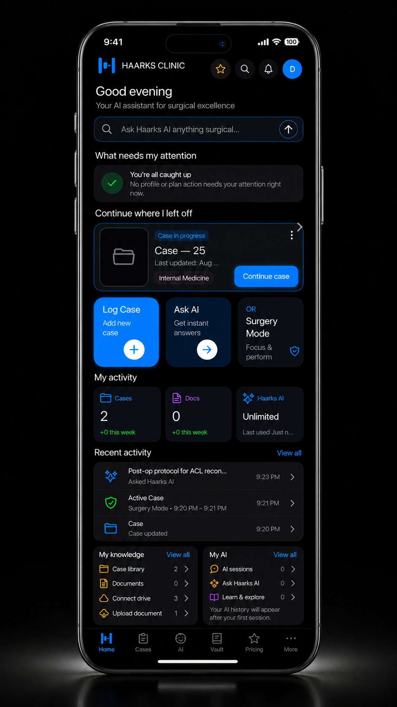

A New Category of Private AI for Surgeons
Your private AI for surgery.
It answers from your own cases and protocols, with sources.
A private AI for surgeons, built around your surgical knowledge, your cases, protocols, and clinical experience, that answers from your own context with sources, not generic information from the internet.
For Registered Medical Professionals Only · Personal Knowledge Platform · Not a Diagnostic Tool · Not Clinical Decision Support
